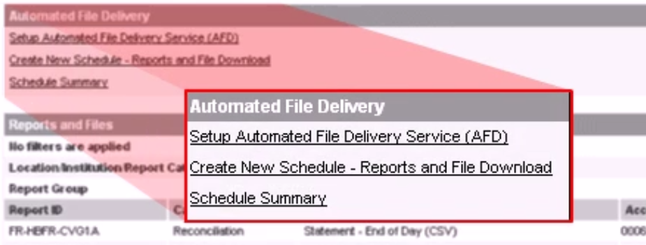
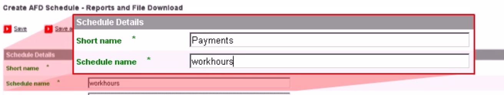
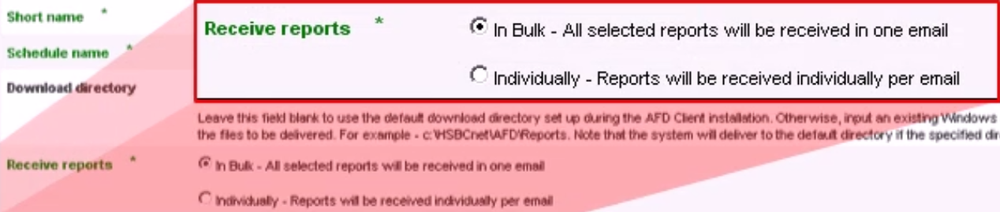
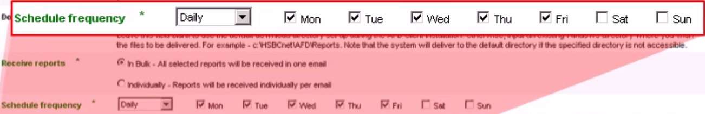
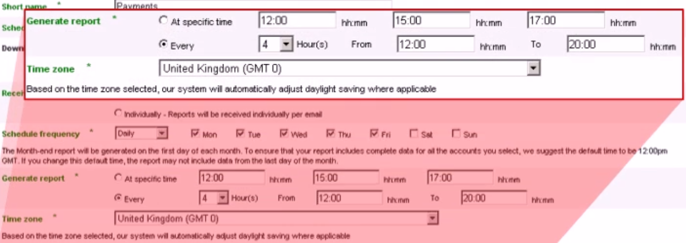

I needed to adapt a video tutorial into written instructions for an unfamiliar software product. I wrote this new content in my own words. The content enables users to easily find, understand, and act upon instructions for scheduling report deliveries with the product.
How I Wrote These Instructions
I reimagined the video tutorial as a set of organized, repeatable instructions:
I divided each major task into its own set of instructions to simplify and streamline information delivery.
I chunked content with headings, lists, and note boxes so users can quickly locate and absorb the information they need.
I limited each task to a manageable set of steps.
I established a consistent structure for each task:
Subheadings identify each task.
Numbered lists highlight instructions.
Each list item contains only one step.
Supplementary information appears separate from the listed steps.
I included screenshots to highlight interface elements and layouts.
I produced software documentation for a real-world product.
I omitted some product features as specified by the project requirements.
This project is in no way affiliated with, sponsored by, endorsed by, nor authored by HSBC Bank.
Schedule HSBCnet Reports with the Automated File Delivery Tool
Scheduled reports ensure that you receive the financial information you need exactly when you need it. You can schedule HSBCnet reports with the Automated File Delivery (AFD) tool. AFD can deliver reports to your email inbox or to your HSBCnet workstation.
Follow the steps below to set up report schedules.
Access AFD
You can access AFD under Automated File Delivery on your HSBCnet dashboard (see Figure 1):
Note
If you are a first-time user, click Setup Automated File Delivery Service (AFD) and follow the on-screen instructions. Otherwise, proceed with the following step.
Click Create New Schedule - Reports and File Download to open the AFD Schedule Maintenance tab.
Figure 1: Access AFD on the HSBCnet dashboard.
Create a Report Schedule
The AFD Schedule Maintenance tab contains two main sections: Schedule Details and Report Summary List.
Configure Schedule Details
Begin configuring your report schedule under Schedule Details:
In the Short Name field, enter a brief name to identify the schedule (see Figure 2).
Tip
Choose a short name that will help you quickly identify the schedule when filtering schedules later.
In the Schedule Name field, enter a name that describes the content of the scheduled reports.
Figure 2: Name the schedule under Schedule Details.
In the Download Directory field, enter a file path for saving the scheduled reports to, such as C:\hsbcnet\reports.
Tip
Leave the Download Directory field blank to save the scheduled reports in the default location. If you cannot locate the default location, contact your system administrator.
Choose between these Receive reports options (see Figure 3):
Select In Bulk to receive all reports in a single, scheduled email.
or
Select Individually to receive each report in separate, scheduled emails.
Figure 3: Choose to receive bulk or individual reports from the Receive reports options.
Configure Report Delivery Dates and Times
Complete your report schedule under Schedule Details:
Select Daily, Weekly, or End of Month from the Schedule frequency dropdown list (see Figure 4).
Note
If you select End of Month, proceed to Step 3.
If you selected Daily or Weekly in Step 1, choose which days of the week to receive reports on:
If you selected Daily from the dropdown list, you must select at least one day of the week.
or
If you selected Weekly from the dropdown list, Mon–Fri are automatically selected. You can optionally select Sat and Sun.
Note
If you selected End of the Month in Step 1, then you will receive reports on the last calendar day of each month. Proceed to Step 3.
Figure 4: Select which days of the week to receive reports from the Schedule frequency dropdown list and checkboxes.
Choose between these Generate report options (see Figure 5):
Select At specific time to receive reports at the same time on scheduled days:
Enter up to three delivery times in the hh:mm fields.
Note
Use the 24-hour format.
or
Select Every to receive reports at regular intervals on scheduled days:
Select an interval length from the Hour(s) dropdown list.
In the From field, enter the time to start generating reports each scheduled day.
Note
Use the 24-hour format.
In the To field, enter the time to stop generating reports each scheduled day.
Note
Use the 24-hour format.
From the Time Zone dropdown list, select the time zone for the report schedule.
Figure 5: From the Generate report and Time zone options, select when to receive reports on scheduled days.
Configure the Report Summary List
Add reports to the schedule under Report Summary List:
Select individual reports by name to add them to the report schedule.
Tip
You can quickly manage bulk selections:
Add all reports with Select All.
or
Remove all selected reports with Clear All.
Note
If a report is missing from the Report Summary List, you may lack permission to view that report. Speak to your system administrator for assistance.
Save the Schedule
Activate the schedule by saving it:
Click Save at the beginning or end of the AFD Schedule Maintenance tab.
Tip
Click Save as incomplete to save a draft of the schedule without activating it.
After saving, you will see a confirmation page that summarizes the schedule.